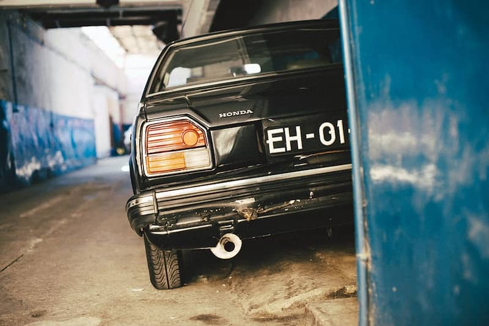

In life, every American remembers two things — their first car and their first love. It was August 20, 2002, one of my last days of that year’s summer camp, when my father picked me up in our new family hauler — a dark red Honda CR-V that he and my mother affectionately named Rhonda. My first love. Rhonda the Honda. To say Rhonda was pretty would have to be said with strange facial contortions; it would be said through squinted eyes and a voice a few octaves higher than usual, usually accompanied by a shrug or six. But she was a Honda and that meant she was cheap and very reliable, something perfect for our little middle class family. She was a replacement for my mother’s fourteen-year-old Honda Civic, called Wanda the Honda, oddly enough. The only memory I had of Wanda was a huge spider crushed in one of the doors that literally mentally scarred me for life. No wonder I didn’t mind seeing Wanda go. Plus, now we had Rhonda. Rhonda would shoulder our burdens on long trips to Cooperstown, Boston, or even just the sandy shores of Stone Harbor.
The first car I fell in love with was my dad’s old Ford Escort station wagon he named Fred. Fred died on a hot summer day in 2006 at the Cherry Hill Mall parking lot. For some reason, I had to choke back tears while staring out of Rhonda’s back hatch as we drove away with a heat mirage rising up and enveloping Fred’s dark blue exterior. My parents spoke in hushed, angry tones in the front seats about the next thing to do; my father had to drive to a train station every day and my mother to her job at a local newspaper twenty minutes from home, so they needed two cars. I pressed my face up against Rhonda’s rear seat backs and watched as Fred grew smaller and smaller, letting the khaki-colored fabric imprint my skin with square shapes. At least we still had her. Her maroon exterior sparkled in the late August sun and her khaki-colored interior was firm yet warm; like a mother that pushes hard but is always there when times get tough.
Ownership of Rhonda moved from my mother to my father when Fred died and my mother had bought a slightly used dark gray Toyota Corolla she named Gaston, after a now former Philadelphia Flyers goalie. Rhonda was getting up there in years now, but she showed no signs of malfunction. She was a Honda through and through and was built to withstand anything. She lived through hurricanes, ridiculous blizzards, and so much more. She had dings, scratches, cracks, and bad brakes, but she was ours.
Rhonda was special to me because of how long she was in my life. We got her when I was six and I sold her when I was twenty. That’s fourteen years of my life, seventy fucking percent of it, that I spent with Rhonda. She was there for the best and the worst parts of my life, from weddings to funerals and everything in between. She had taken me on dates and coddled me after breakups. She was a constant. I was sixteen when I learned to drive, and I did it in Rhonda. I was eighteen when she officially became mine, after my father bought a brand new Volkswagen hatchback for himself. I got a couple of clip-on window American flags to put on the rear windows and Rhonda became The Iron Patriot, going by Rhonda only to her close friends and family.
She had her quirks and that was part of the reason why she was so special to me. One such quirk was that the front two seat belts would only properly clasp if hit with the passenger’s wrist from a very specific angle. Another was that the rear passenger doors didn’t lock with the universal locking mechanism on the driver’s side, but rather had to be operated manually. That was what caused me to be locked out of the car in the middle of nowhere with no phone, shirt, or shoes for an hour and a half before I shattered a window, unlocked the door, and embarrassingly drove home.
The Iron Patriot accompanied me alone for roughly twenty-five thousand miles. She made appearances in different states, drove up and back to my best friend’s house in Freehold several times, and had many times undergone the stereotypical teenage rite of passage — backseat summer car sex. The Iron Patriot was especially important in the formation of a long distance relationship. I had met a girl staying in Gladwyne, Pennsylvania for a few weeks and made the thirty-five-or-so-minute journey there and back a dozen or more times in those few weeks. The young woman and I laughed, kissed, fucked, and loved in The Iron Patriot. Bathed in her headlights, I tearfully bid this young woman goodbye for a few months before I would fly to her home state to visit her, leaving The Iron Patriot alone for five days to relax under a low autumn sun. The Iron Patriot, through all of this life experience, saw it all. They saw objects or places can sometimes become haunted if they see enough emotional anguish or energy, so I’d say that there’s a good shot that today some poor kid has a haunted, fourteen-year-old CR-V.
Naturally, the aforementioned long distance relationship came to a close. It was late one Sunday night (or Monday morning, depending on your point of view) in early January. I was sitting in my car after a late, lone viewing of Leonardo DiCaprio’s Oscar-winning performance in The Revenant. My long term, long distance relationship was about to end. I knew it, and she knew it. We’d hardly spoken for six days. I decided that it was a good time to reach out and say “hey,” while sitting alone in my car at 1:30 in the morning.
Ring ring. Nothing. Listening to the dial tone, I stared at the front of the theater through The Iron Patriot’s frost-covered windshield.
Ring ring. Still nothing. Light snow had began to fall, reflecting color in all directions as it glided softly down in front of the theater’s blue neon letters.
Ring ri— “Hello?” her voice sounded tired.
“Hey,” I said back.
“What’s up?”
“I, uh, just got out of a movie. Thought I’d see what’s up.”
“Thought you’d see what’s up, huh?”
“Yep.”
“Well, I just got into bed. I’ll talk to you later.”
“Oh, uh…okay. Bye. I love y—” the line was dead.
I threw my phone into the back seat and punched the ceiling of my poor Rhonda as hard as I could, making a slight dent. She was Rhonda to me that night, after an extremely intimate and emotional experience she and I shared together that I somehow coped with alone.
I sat in the lot for a while, caressing my now-red knuckles and enjoying the silence and the snow. I watched the last of the cars pull out of the lot as a thin, powdery white built on Rhonda’s windshield wipers. I watched cracks in the asphalt fill up while the rest of the tarmac sat speckled and frozen like the crusted surface of an icy sea. I watched the neon blue letters spelling CARMIKE flicker and turn off as the snow piled softly on top of them. When it reached half an inch, I decided I’d stop wallowing in self-pity and go home. The world was cold, but life went on.
The next few months were weird. I was in school, sure, and working, but I got it in my head that I should start looking for a different car. Not a new one, I had an idea of what I wanted (preferably late-‘90s or early 2000s Hondas), but a different car. I knew I was going to be getting rid of The Iron Patriot. A few times I stopped and told myself I’d drive her until she died and I was forced to get rid of her, but the desire to get something else always won out. My parents were really on the side of me getting a new car too; they’d worried about their only child driving a fourteen-year-old crossover whose steering wheel shook past fifty miles an hour up and down the highway seven days a week all over and through the dips and bends of New Jersey. I can’t say that I blame them looking back.
In late May of last year, Honda’s newly redesigned Civic coupes went on sale. One of the colors was an obnoxious “energy green pearl” as deemed by Honda, and I was hooked. I was willing to get rid of my beloved Patriot for this green…thing. A Friday in early June my father accompanied me to a nearby Honda dealership where I would seal the deal. I was getting rid of Rhonda. I test drove this green Civic and was happy enough with it. It was fast (although fast to me after driving The Iron Patriot for three years could have been a wheelchair on ice), nimble, and quiet. I was sold. It would help me build credit. It was much better on gas, much more attractive, and way safer. What could go wrong? What was wrong with this plan? There was nary a doubt in my mind that this was the right call and so I decided to sell The Iron Patriot and use that money as a downpayment on this new Civic I had started to call Maxine.
About three quarters of the way through the dealings, I was hit with incredible remorse. I was actually going to have to leave my Rhonda behind. My back was to the dealership’s outer windows where she sat in the rain, staring in at me. I made the mistake of turning around to look at her and started to sob. Not a quiet, remorseful sob, but rather a loud and ugly one. That car was the only thing besides my parents to be constant in my life for seventy percent of it. I sobbed harder and harder and still she sat staring at me, rain collecting on her windshield and hood. Her big, triangular headlights gleamed brightly at me as they became covered in rain. It looked like she was crying too. I couldn’t believe how attached I was to her; I never thought the day would come when I would actually have to get rid of my Rhonda. My father tried consoling me but it was no real use. I was a wreck. He was emotional too, but not making a scene the way I was.
I had left the table to go clean myself up in the bathroom where a kind old mechanic helped to console me. I was rubbing my eyes at the sink and washing my face with cold water when I felt a large hand pat me on the shoulder.
“You okay, son?” he asked me.
“Y-Yeah,” I managed to stammer out. “I’m selling my first car. She’s been in my life for fourteen years.”
“Oh,” he looked at me with soft compassion and then smiled faintly. “I’ll take care of her for you.”
I looked at him and tried to muster up some positive emotion but couldn’t. He smiled again, looked down, and walked out.
While startlingly kind for a stranger, his words only made me sob harder. I eventually cleaned myself up and walked back to our negotiating table, where Rhonda’s plates sat in the middle, warped and weathered, a startling contrast. I looked out the window to where she was parked and she was gone. My father had asked the people at the dealership to pull her away before we left so I wouldn’t have to drive past her, wet and alone, in my brand new spotless Civic that didn’t have issues with its locks or seat belts or its steering wheel shaking. It was very considerate and I still think it’s one of the nicest things anyone has ever done for me.
I left the dealership that day in much better shape than I was in a few paragraphs ago, still sad but beguiled at how well equipped even base model cars are these days. My Civic, Maxine, is great. She drives wonderfully, is fun around corners, has a nice little growl to her, and currently does 36.1 miles per gallon, giving me approximately four hundred and thirty five miles to a tank. She’s pretty to look at and I always get compliments on her color, but she isn’t the CR-V. Not a day goes by where I don’t think of my Iron Patriot, Rhonda, the car that picked me up from summer camp at age six, that I grew up in, that was my own personal love shack from ages seventeen to twenty, that was simultaneously one of my closest friends and best nurturing figures. What I experience on a daily basis because of Rhonda is an emotion known on this world as “regret.” Her license plates hang next to my bed, warped and weathered, a reminder of the old days, as if I could ever forget.
Everyone remembers their first love.